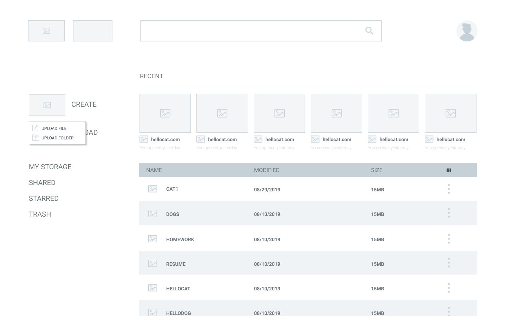
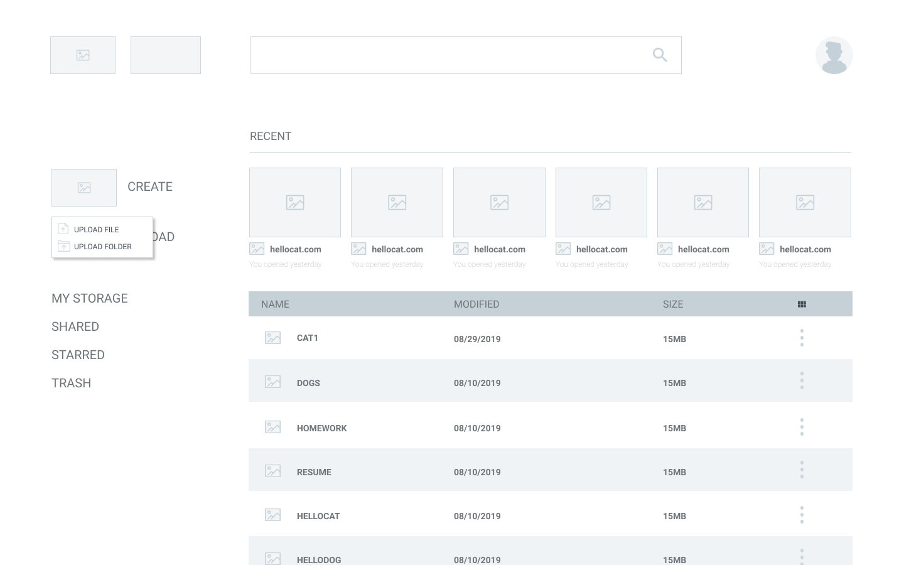
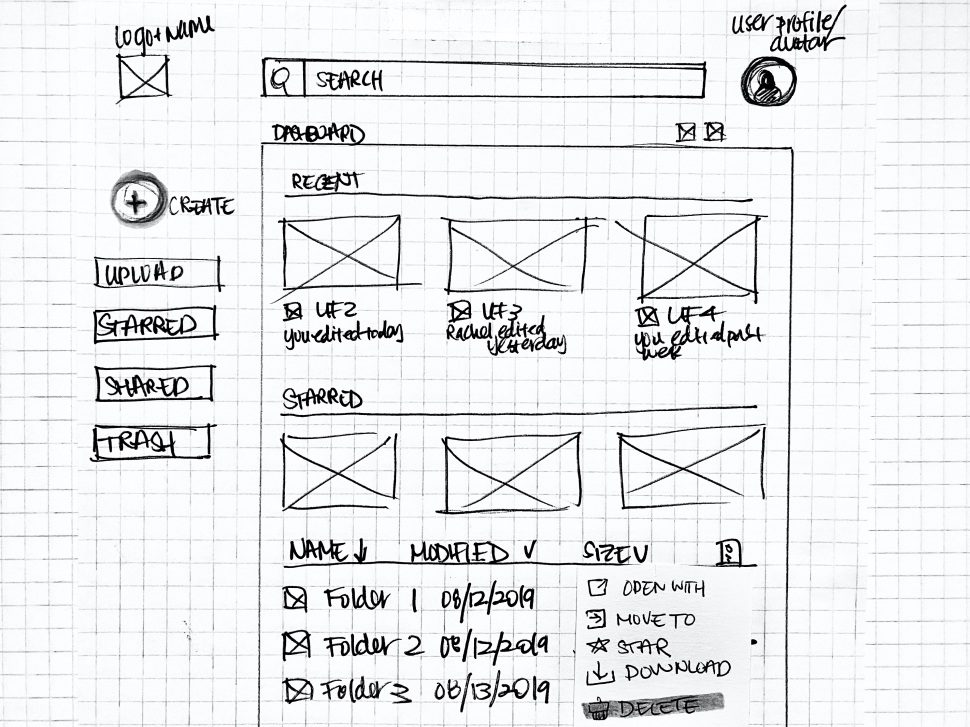
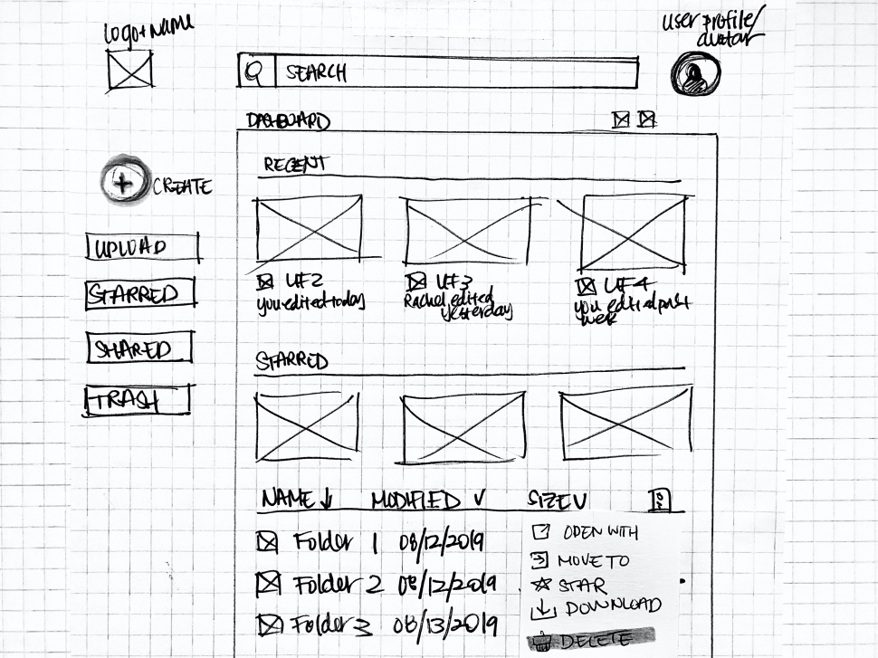
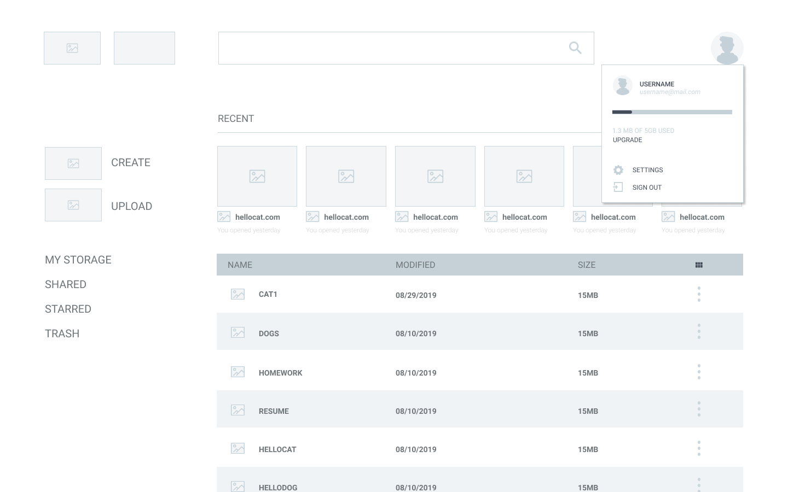
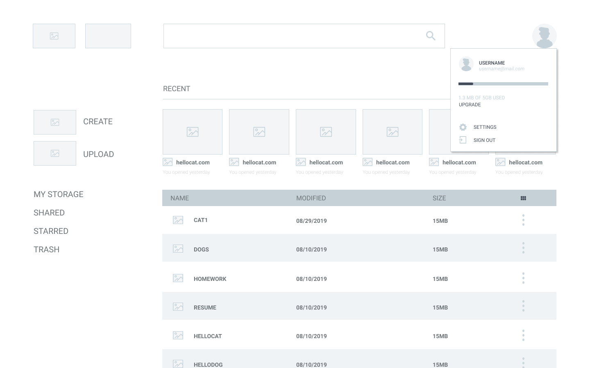

Problem
A majority of users utilize more than one cloud storage product for storing, sharing, and organizing purposes.

Solution
My solution was to effectively combine features of leading competitors and address their weakness into one product. In addition, as images are most commonly stored, users wanted the ability to edit images after it has been uploaded to the cloud without the use of extensions.
User Surveys
Given the versatility of cloud storage products, I kicked off my project with a user survey in order to better understand the user and their motivations. I distributed the survey amongst my peers and gathered 24 responses.
View User Survey
Do you use more than one Cloud Storage service?
In terms of collaboration features, what do you look for?
What type of content do you typically store?

INSIGHTS
While collaboration features are important, most participants are mainly looking for the ability to send out a shareable link to their files. Only 13% of users care to chat with other collaborators, so I kept sharing capabilities simple.
Users choose to utilize their current products mainly because it is easy to use. Therefore, I needed to implement a familiar interface as to maintain usability.
Following images, the most commonly stored files are Word Documents, Spreadsheets, and Presentations. In addition to the image editing tool that was requested, I needed to include some kind of suite for productivity tasks that could be easily accessed.
Competitive Analysis
After conducting the user survey, I was able to perform a competitive analysis. I opted for the top three most commonly used products based on my previous survey: Google Drive, iCloud, and Dropbox.
icloud

PROS:
• Brand loyalty• Sync feature and ease of use
CONS:
• Available only to those who own an iOS devicegoogle drive

PROS:
• Google Drive is integrated across G suite• Clear, intuitive interface
CONS:
• Requires a g-mail addressdropbox
PROS:
• Ability to create files in both Microsoft Office and G Suite• Offers Dropbox Paper- a collaborative workspace
CONS:
• Confusing and cluttered desktop interfaceopportunity for:
• Better interface experience
• Accessibility to the product without needing a specific account or device
• Implementing an image editing tool which they all lacked. (The option is available if a user edits the photo in the iCloud Photo Library and the change will update all connected devices. iCloud.com doesn’t not have the option to rotate photos.)
Personas
The personas in this project were created based on the user surveys to further understand different user motivations, frustrations, and goals. The products were primarily utilized for personal use with ages ranging from 18-34.
View full personas
Alex D.
"Busy College Student"
GOALS
• Collaborate with her classmates remotely• Sync content online, not on her device
• Pay no more than .99/month for services
FRUSTRATIONS
• Drive needs internet connection• Privacy is an issue
• Doesn’t like having to use a gmail account
Tom G.
"Professional Photographer"
GOALS
• Save money on storage/memory space• Keep up with clients and colleagues at work
• Not worry about losing physical hard drives
FRUSTRATIONS
• Organizing is time consuming• Privacy is an issue
• Lack of image editing tools for uploaded files
User Stories + Flows
After conducting research, I was able to identify important tasks needed in a cloud storage product. And with that, I created user flows to successfully complete said tasks.
View user stories + flows
Sketches + Low Fidelity Wireframes
I sketched out a rough idea of how I wanted my wireframes to look before producing digital copies. After I was satisfied with my rough draft, I created my lo-fi wireframes with Figma.
I put together enough screens for a prototype and began conducting usability tests in Invision. I assigned participants 3 high-priority tasks:
1. Create an account.
2. Upload a piece of content.
3. Move a file into a new folder.
Overall, I had positive responses to my designs and everyone was able to navigate the site smoothly. I can only attribute that to the familiarity of the interface.
I would say that the only issue I encountered was when I asked testers to move a file into a folder, almost all testers opted to “drag-and-drop” items over. It wasn’t something I could easily execute into my prototype. However, it was something I knew needed to be implemented into the final product.
 



 


 

Brand + Identity
BRAINSTORM
I first began my brainstorming process by performing mind mapping exercises. From there, I really liked the idea of using the word “cache”. At first, I opted to use “Cache Cloud” but I wasn’t satisfied with the idea and kept on researching.
cache
(n): a collection of items of the same type stored in a hidden or inaccessible place.
(v): store away in hiding or for future use.
BRAND NAME
After a bit of research and more brainstorming, I settled on “CacheCow”. Majority of users are concerned about their safety and privacy when it comes to cloud storage systems. Cache as a noun means a collection of items of the same type stored in a hidden or inaccessible place. As a verb it means to store away in hiding or for future use. The implication of a safe, secure place is there. It’s also a play on words with “Cash Cow” as the words cash and cache are pronounced the same.

LOGO
Once I had determined the name of the brand, I started sketching out potential ideas. I narrowed down my options to two different concepts and refined them using Figma.
I ran a few preference tests over my refined, digital logos and the second option was by far the crowd favorite.

COLORS
The monochromatic color scheme with an accent color of green helps with legibility and clarity. Green can mean a multitude of things but in this case, it is used because it has implications of safety and a sense of calm. Similarly, blue induces a sense of calm and peace. It is also associated with trust and honesty while the color gray provides a steadying effect on other colors around it.
TYPOGRAPHY
I wanted an interface that was minimalistic and modern. All to create an atmosphere that was organized and brought users a sense of calm. Having said that, I knew my best bet was to use sans-serif, geometric typefaces in order to emulate the look I was going for.

High Fidelity Mockups
After establishing my product’s brand and curating a style guide, I was able to work on designing my high-fidelity mockup screens. This consisted of implementing my style guide into the wireframes that I had created earlier.
It took me a couple of rounds of iteration and feedback before finalizing the mockups.


A/B Preference Test
I performed a few preference tests in order to maintain and further ensure that my designs were user-centric.

DIVIDERS
65% of participants preferred lines to divide content. While I do like utilizing different colors to enhance legibility, I wanted to see if just regulars lines would be better. I was pretty surprised with the results. I didn’t expect the lines to be favored this much. I figured that perhaps major competitors don’t use this method (colored dividers) and this is what most are accustomed to.

DASHBOARD LOGO
68% of participants preferred the isolated logo over the logo with words. I felt as if both versions could have worked well. The isolated logo does have a cleaner look, though.

BUTTON COLOR
53% of participants preferred the lighter colored “Create” button over the green button. While it wasn’t favored drastically, I figured keeping that color light would further distinguish the CTA buttons on the landing page that are colored the same.
USABILITY TESTING
I performed usability tests with my high-fidelity mock-ups. I assigned participants 3 high-priority tasks:
1. Create an account.
2. Upload a piece of content.
3. Move a file into a new folder.
All participants completed the tasks smoothly and quickly. However, as with the first usability tests, users attempted to “click-and-drag” items. It’s happened enough times that it needs to be implemented into the final product.
FINAL MOCKUP
After carefully researching and multiple rounds of testing, my screens and prototype were finalized.
DESKTOP


MOBILE
Conclusion
Overall, this project was a very humbling experience. I didn’t realize how difficult it would be to separate myself and my personal preferences from both the user and research. I’ve learned to simply trust the process to validate (or invalidate) my decisions during all phases of development.
KEY TAKEAWAYS:
• Clarify the problem before conducting research. My user surveys could've better addressed cloud storage product pain points.
• Step back and make sure that the designs align with solutions.
• Trust the research! Designs and concepts that make sense to me, may not always make sense to others.
PRODUCT IMPROVEMENTS:
• Product page lacked user motivation. Images of the product and it's UI would've been helpful.
• Work on a mobile prototype.
• While image editing tools were implemented into the product, it wasn’t a high priority task so I didn't test it out with users. I would like to run usability tests to further explore this feature.